Spherical roller bearings have a spherical outer raceway for excellent self-alignment, compensating shaft deflection and mounting error while carrying heavy radial loads and axial loads in both directions. We supply CA, CC, E, E1, MA and MB series in precision classes P0/P6/P5, with outside diameters up to 600 mm, for wind gearboxes, mining machinery, rolling mills and large motors.
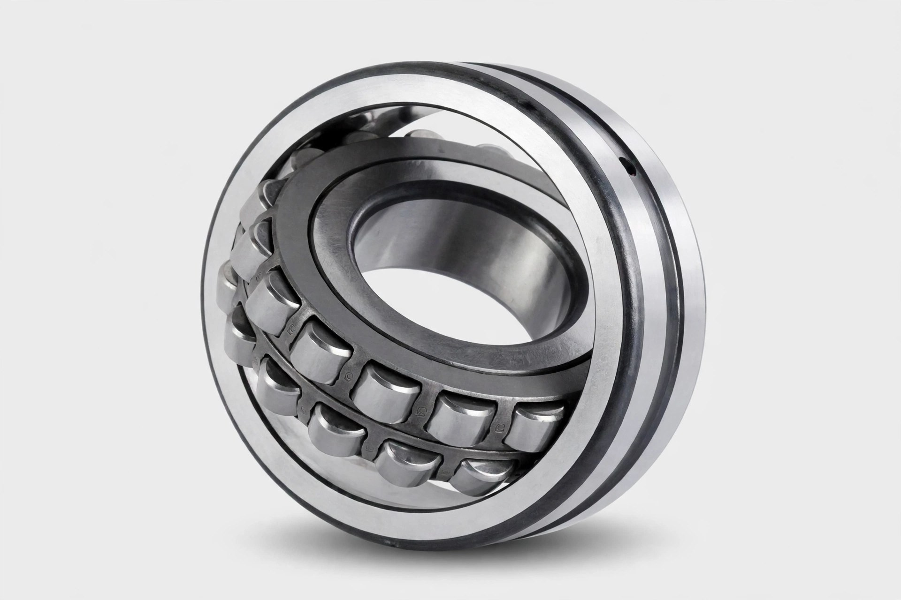
Serie CA Rodamientos de rodillos esféricos
Los rodamientos de la serie CA usan jaulas de acero prensado con rodillos simétricos y un anillo interior fijo…
Más información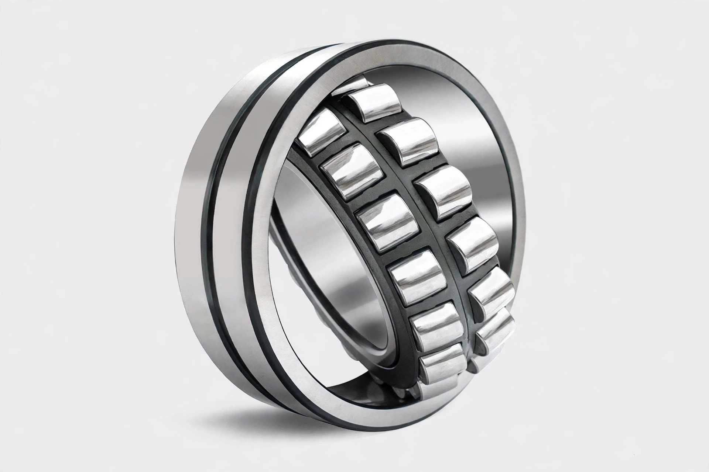
Serie CC Rodamientos de rodillos esféricos
Los rodamientos de la serie CC usan jaulas prensadas y un perfil de rodillo optimizado para una menor fricción…
Más información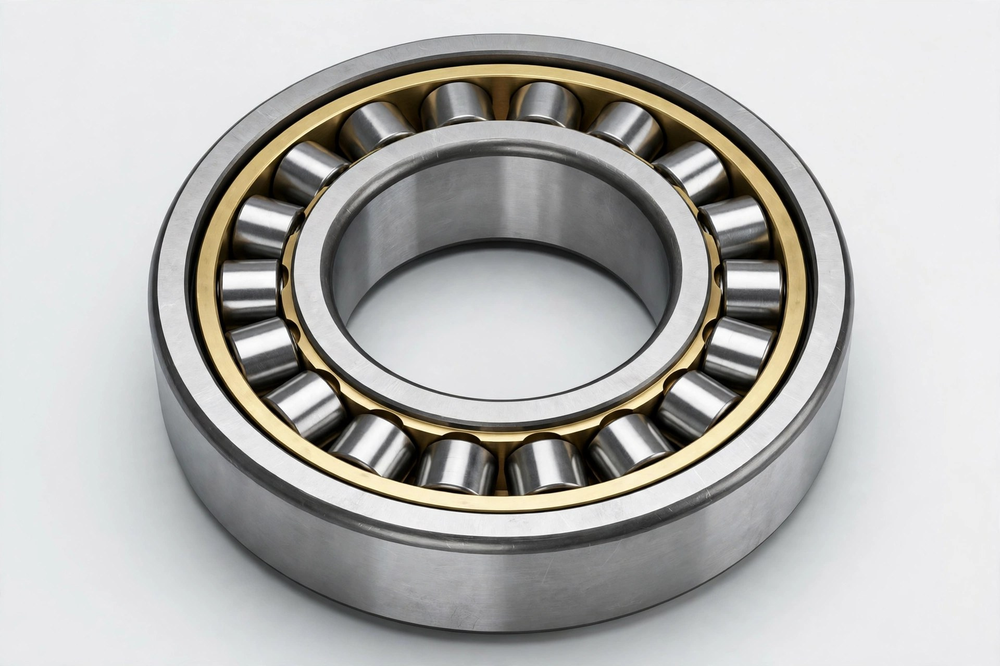
Serie E1 Rodamientos de rodillos esféricos
E1 es un diseño mejorado: el tamaño y el número optimizados de rodillos elevan notablemente la capacidad de carga dinámica…
Más información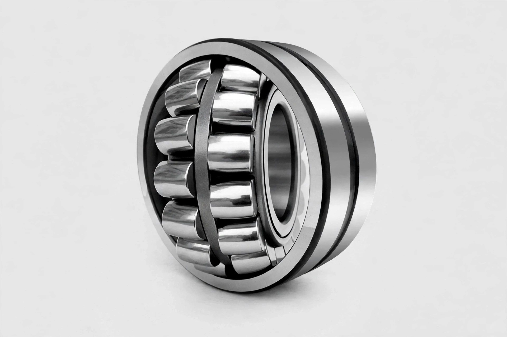
Serie E Rodamientos de rodillos esféricos
Los rodamientos de la serie E usan jaulas de acero prensado reforzadas con una alta densidad de rodillos…
Más informaciónLine contact between rollers and raceways gives far higher radial capacity and rigidity than same-size ball bearings, with separable rings for easy mounting. The range covers single row (NU/NJ/NUP), double row (NN/NNU) and four row designs; precision double row types reach class P4, and four row types are the standard roll-neck bearing for mills.

Rodamientos de rodillos cilíndricos de una hilera
El contacto lineal entre rodillos y pistas da una alta capacidad radial y rigidez; los anillos son separables…
Más información
Rodamientos de rodillos cilíndricos de doble hilera
Los rodamientos de doble hilera (NN/NNU) combinan alta rigidez con una sección radial reducida…
Más información
Rodamientos de rodillos cilíndricos de cuatro hileras
Los rodamientos de cuatro hileras ofrecen la máxima capacidad radial en un bloque compacto y son para…
Más informaciónTapered roller bearings carry combined radial and axial loads, with the load transmitted along the roller contact angle for high efficiency. Single row types are matched in pairs for preset clearance; double and four row types come factory-adjusted for quick installation — wheel hubs, spindles, gearboxes and roll necks.
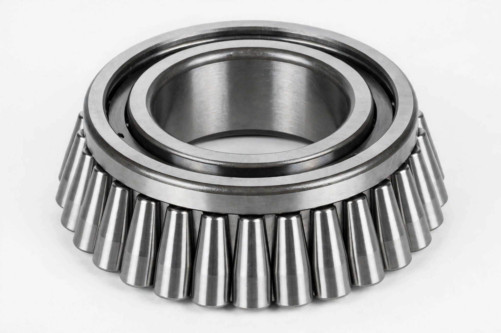
Rodamientos de rodillos cónicos de una hilera
Los rodamientos de una hilera soportan cargas radiales y axiales en un sentido combinadas; son separables…
Más información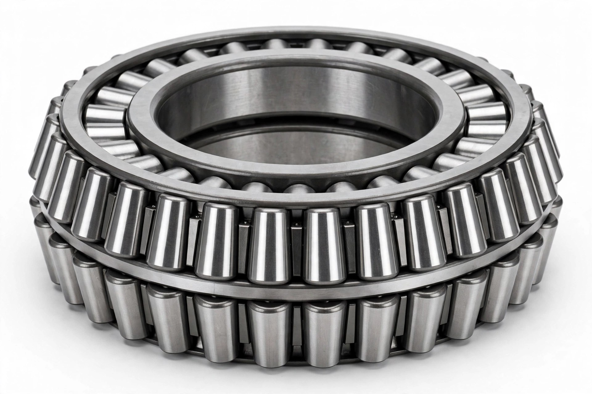
Rodamientos de rodillos cónicos de doble hilera
Dos hileras de rodillos comparten un anillo exterior común para soportar cargas axiales en ambos sentidos más cargas radiales pesadas…
Más información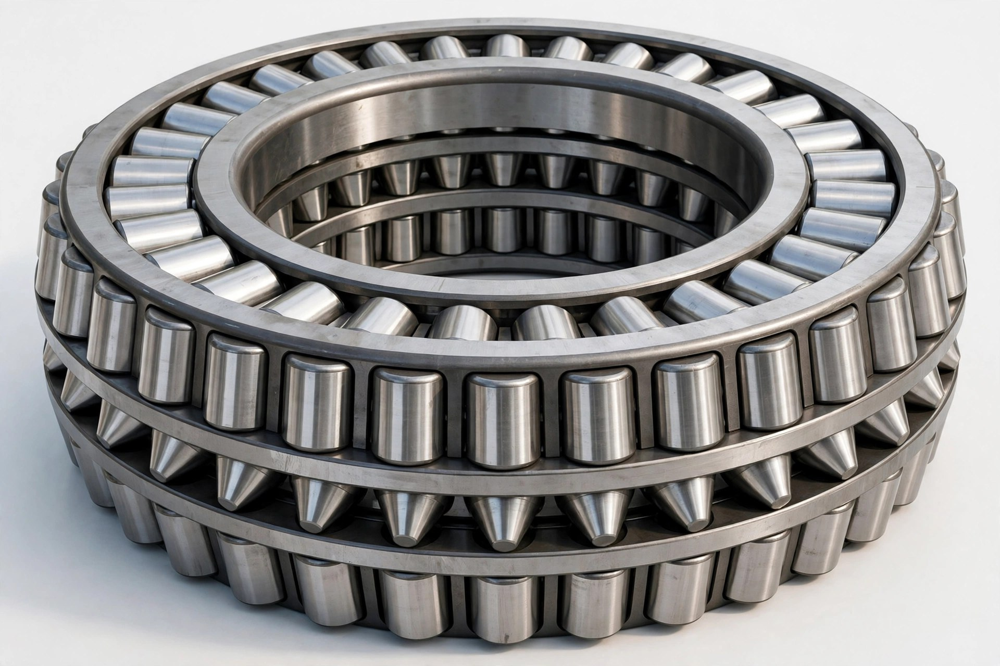
Rodamientos de rodillos cónicos de cuatro hileras
Los rodamientos de cuatro hileras combinan una capacidad muy alta con resistencia a impactos para laminadores…
Más informaciónThrust bearings carry axial loads. Spherical roller thrust bearings combine very high axial capacity with self-alignment for water turbines and vertical motors; thrust ball bearings are compact and separable for pure axial loads at moderate speeds — crane hooks, vertical pumps, machine-tool accessories.

Rodamientos axiales de rodillos esféricos
Los rodamientos axiales de rodillos esféricos soportan cargas axiales muy altas y admiten cierta carga radial…
Más información
Rodamientos axiales de bolas
Formados por una arandela de eje, una arandela de alojamiento y un conjunto de bolas y jaula, los rodamientos axiales de bolas soportan…
Más informaciónThe most widely used rolling bearing: simple, low friction, very high limiting speed, carrying radial and two-direction axial loads. Open, shielded (Z/2Z) and sealed (RS/2RS) variants come grease-filled for maintenance-free service in motors, fans, pumps and general machinery.

Rodamientos rígidos de bolas
De diseño sencillo, baja fricción y capaces de velocidades muy altas, los rodamientos rígidos de bolas soportan…
Más información
Rodamientos rígidos de bolas con placas de protección
Las versiones Z/2Z llevan placas metálicas en uno o ambos lados para impedir la entrada de polvo, y vienen lubricadas de por vida…
Más información
Rodamientos rígidos de bolas con obturaciones
Las versiones RS/2RS usan obturaciones de contacto NBR para una mejor protección contra polvo y agua que las placas, rellenas…
Más informaciónAngular contact ball bearings carry combined radial and one-direction axial loads with contact angles of 15°/25°/40°; pairs provide bidirectional location and preload with excellent high-speed behaviour. Four point contact designs take bidirectional thrust in one compact bearing — spindles, compressors, slewing rims, construction machinery.
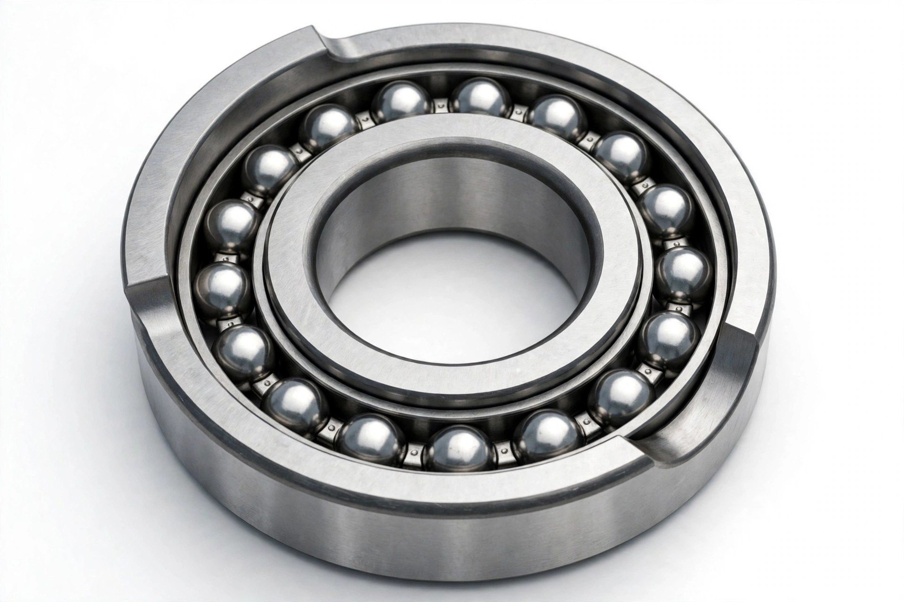
Rodamientos de bolas de contacto angular de una hilera
Soportan cargas radiales y axiales en un sentido combinadas; ángulos de contacto mayores elevan la capacidad axial…
Más información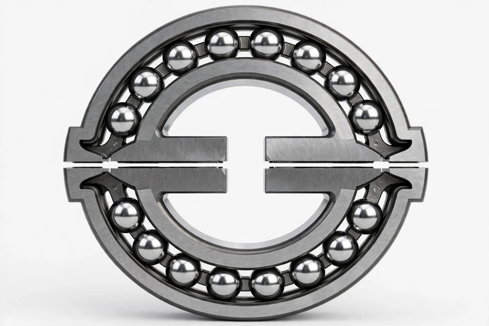
Rodamientos de bolas de contacto angular de contacto en cuatro puntos
La pista interior en forma de melocotón permite que un solo rodamiento soporte cargas axiales en ambos sentidos más algo de…
Más informaciónRodamientos de bolas de contacto angular de doble hilera
Model & size rangeEquivalent to a pair of back-to-back single row angular contact bearings sharing an outer ring, they take bidirectional axial loads and overturning moments with simple installation and a compact footprint. The 32/33M series uses solid brass cages; the 4200/4300 series comes open, shielded or sealed.
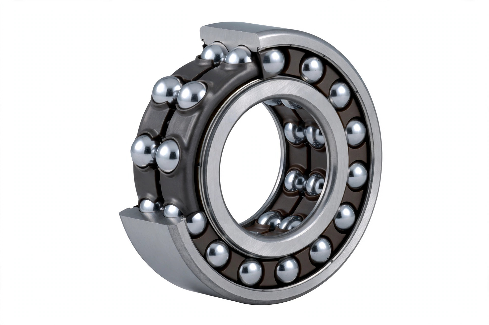
Serie 32/33M Rodamientos de bolas de contacto angular de doble hilera
La serie 32/33M usa jaulas macizas de latón con hileras de bolas en oposición para soportar carga axial bidireccional…
Más información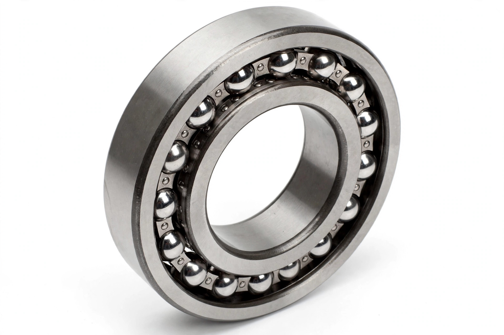
Serie 4200/4300 Rodamientos de bolas de contacto angular de doble hilera
Sección compacta y buena rigidez; las variantes abierta, con placas (Z) y obturada (RS) sirven para motores, engranajes…
Más informaciónThe core component of multi-roll cold mill support-roll systems: high OD accuracy, uniform wall thickness and extreme rigidity that directly determine strip thickness precision. Clasees P4/P2 are available, matched to Sendzimir and 20-high mills, with customisation by mill model.
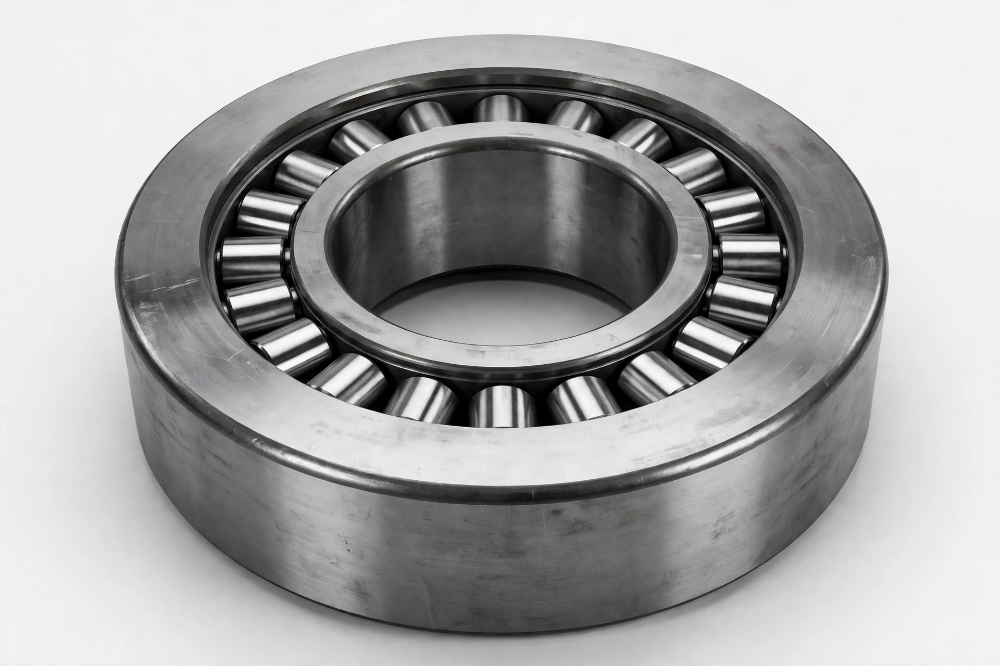
Rodamientos de apoyo
Los rodamientos de apoyo para laminadores en frío de varios rodillos destacan por su alta precisión dimensional exterior y uniformidad…
Más informaciónA spherical outer raceway gives excellent alignment, compensating shaft deflection, mounting error and multi-bearing misalignment with low friction and high limiting speed. Open and sealed variants suit long, less rigid shafts in fans, textile and food machinery.
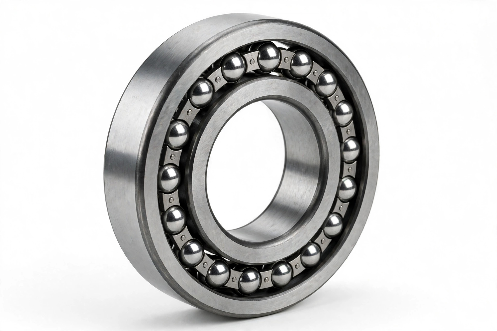
Rodamientos de bolas autoalineantes
La pista exterior esférica da una excelente alineación y compensa la flexión del eje y el…
Más información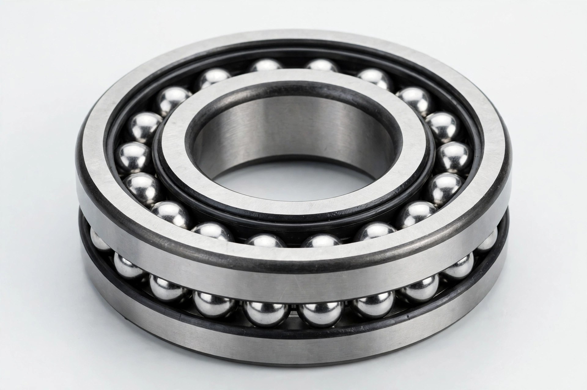
Rodamientos de bolas autoalineantes, obturados por ambos lados
Las versiones obturadas del rodamiento de bolas autoalineante vienen llenas de grasa y sin mantenimiento después…
Más informaciónMás tipos de rodamientos
Four more bearing types added to the range: needle roller bearings and linear ball bearings with full standard model tables, plus vehicle-specific wheel hub units and railway axlebox bearings supplied to vehicle and axle dimensions. All types are available in outside diameters up to 600 mm.
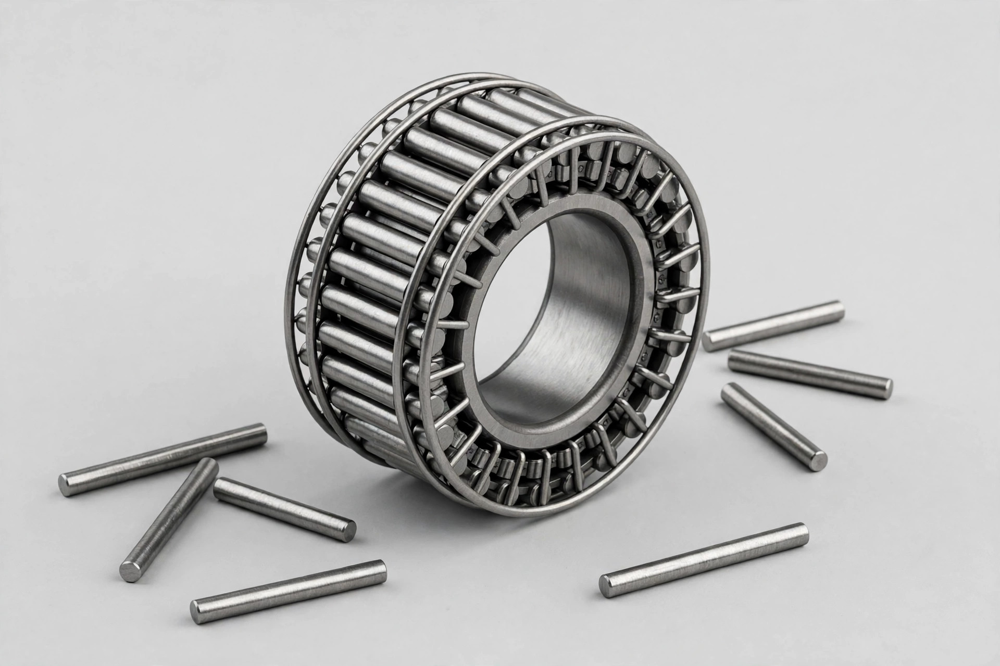
Rodamientos de agujas
Rodillos cilíndricos finos dan alta capacidad radial en un espacio compacto; NK rueda sobre la pista del eje y NA49 añade un anillo interior.
Más información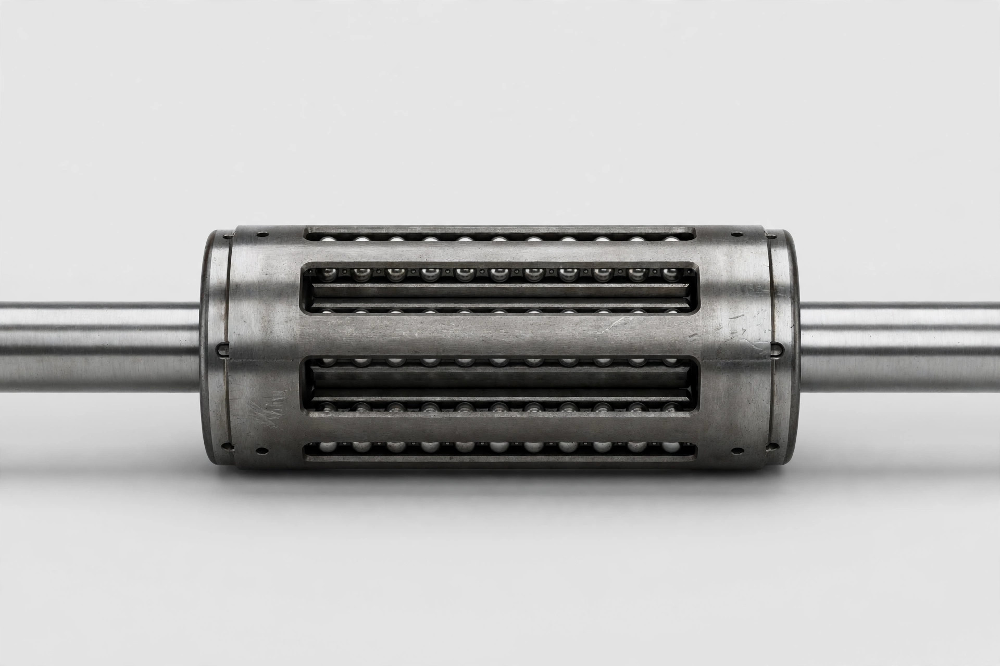
Rodamientos lineales de bolas
Hileras de bolas recirculantes guían un eje en movimiento rectilíneo con baja fricción; serie LBBR compacta y LBCR de mayor carga.
Más información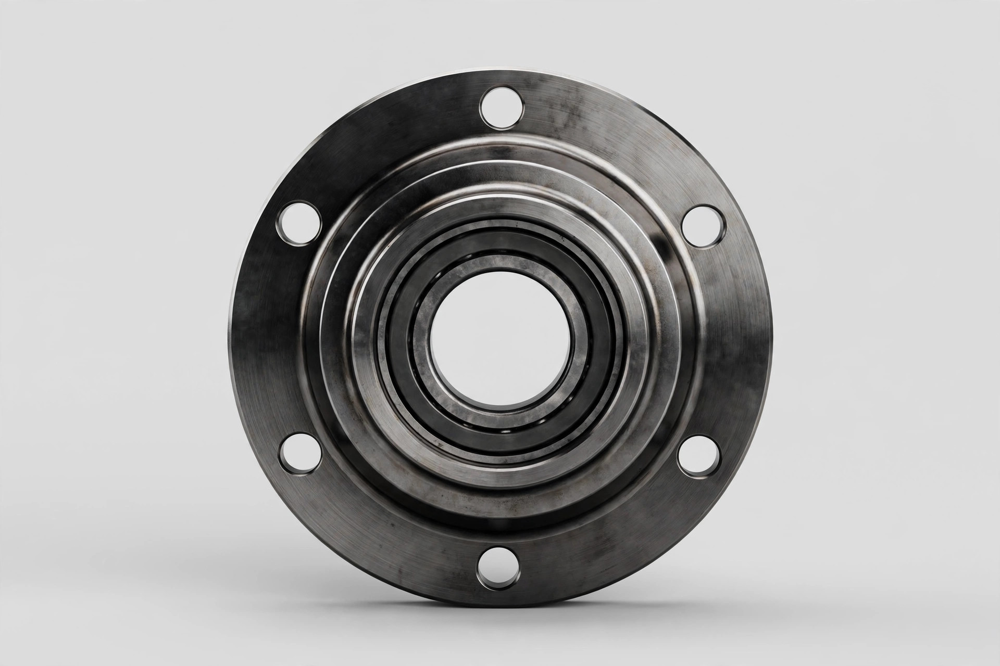
Unidades de buje de rueda
Unidades de buje preajustadas y sin mantenimiento para turismos y vehículos comerciales, con anillos de obturación magnéticos ABS cuando se requieren.
Más información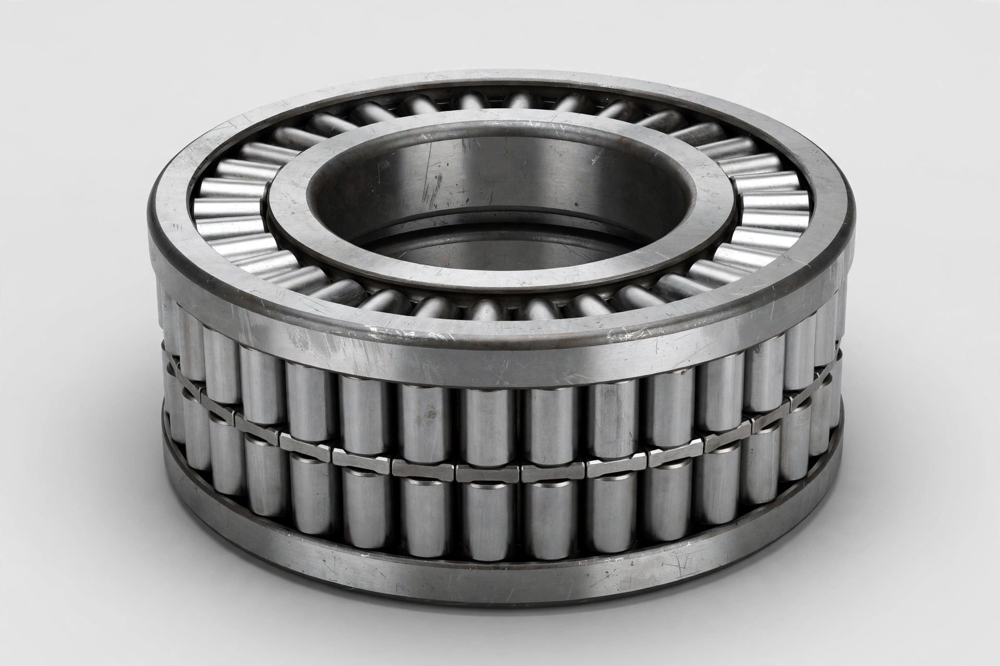
Rodamientos para cajas de grasa ferroviarias
Rodamientos de caja de grasa de alta resistencia para coches de pasajeros y vagones de carga, en el tamaño estándar hasta 600 mm de diámetro exterior.
Más información